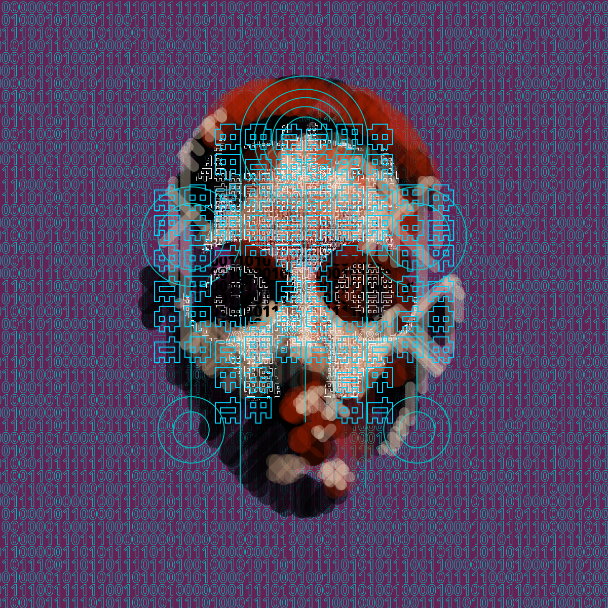
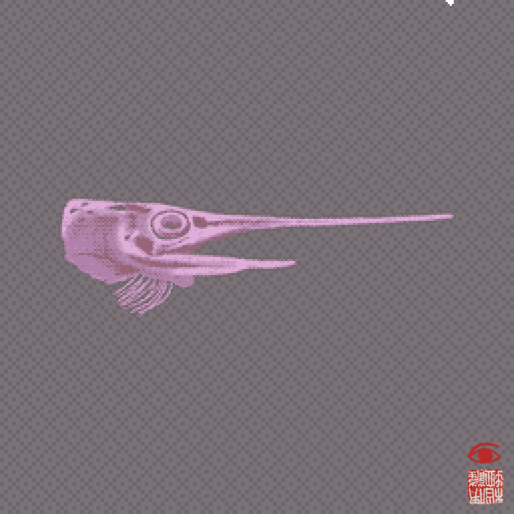
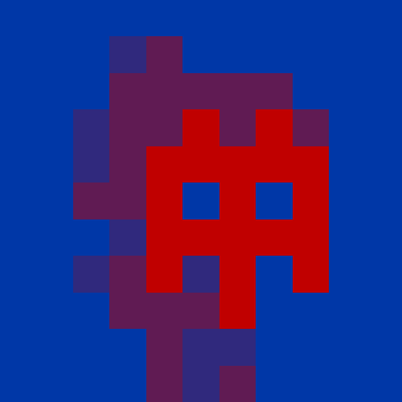

Sovrn's fully on-chain collections, in a format that can be shared on socials
Pick a collection



Where the work comes from
These three collections keep their artwork inside the contract as an encoded vector drawing with no dependencies.
This tool pulls the SVG data from the contracts and converts it to gifs that play with the parameters specified in the encoding.
byteGANs are a compressionist approach to putting GANs on-chain and are the first AI art collection that was put fully on-chain on Ethereum (in its entirety).
Wunderkammer is a conceptual gesture about permanence and transience using its on-chain presence as metaphor for the presence of death in life.
Reflection encodes and executes Pindar Van Arman’s full reflective AI process fully on-chain.